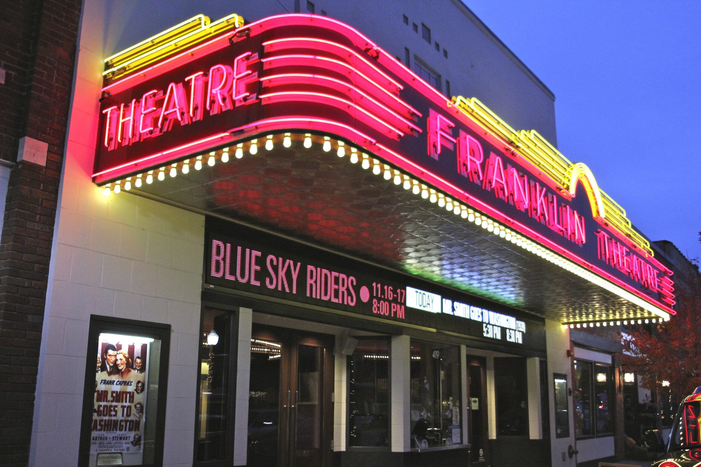
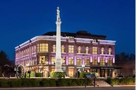
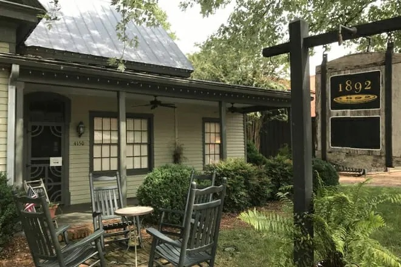

It's a snapshot of rural middle Tennessee and the tiny villages that dot the landscape. The collection of shops, restaurants, galleries, and, well, people to be found here is so fun and unique that it has attracted world-class talent… so don't be surprised if you happen to see someone you know from stage or screen.
What To Do

- Historic Main Street Endearingly called America's favorite Main Street, Franklin's charming downtown is stitched together with cute boutiques, Southern fare, antique shops, and historic landmarks.
- Leiper's Fork If you’re looking for antiques and gifts, live music, a memorable meal or just another inviting place to stretch your legs, this little hamlet known as Leiper’s Fork will not disappoint.
- Arrington Vineyards Acres of trellised grapevines are the backdrop for an incredible picnic experience, and you can purchase snacks and sample 18 award-winning blends from the winery before grabbing a table, a fire pit, or the perfect spot to lay out a blanket on the hillside.
Where To Stay

- Book your Stay! Planning your trip to Franklin starts with a great place to stay!
What To Eat

- 1892 Restaurant Named after the year the house it occupies was built, the 1892 Restaurant honors time-old culinary traditions with a daily rotating menu featuring smoked short rib, zucchini noodle carbonara, and house-churned cookies and ice cream.
- 55 South 55 South is an industrial space for inventive Southern comfort eats along with specialty drinks & weekend brunch.
- Cork & Cow Cork & Cow is a posh, brick-lined venue offering refined steakhouse classics, plus creative cocktails & fine wines.